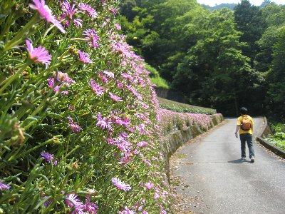
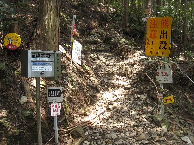
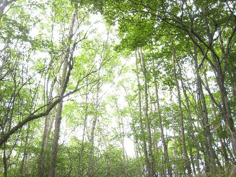

十枚山ハイキング | 2009年6月 シュガー＆べっしー |
|---|---|
| 熊野古道に行こう！って企画から、天気予報が悪かったため、近所の十枚山に行くことになりました。メンバーはsugarと私。 十枚山は、静岡市の梅ヶ島にある標高1,726ｍの山である。よく、花が綺麗とか、展望が良いとか聞いていたので、一度は登ってみようと思っていたところだ。天気予報は晴れのち曇り。午後のほうが悪そうだ。 ガイドブックによると、中の段集落から標高差800ｍ位。時間にして2：30〜3時間と踏んでいた。 ただ、「中の段集落」に入る前に駐車しないと、駐車場がないと書いてあった。 って事なので、集落手前、丁度工事用のバリケードがあった場所に駐車して、そこから歩いたのだが、いやはや、登山道入り口にたどり着くまでに、一体どの位登ったか。時間にして1時間かかってしまった。 木陰もないアスファルトの照り返し道だったので、登山口に着いた時には、既に疲れていた。 | |
|  中の段集落 |  登山道入り口。熊出没注意の看板が目立つ |
| まあ、これからは木陰があるから・・・と歩き始めた。登山口には「熊出没注意！」とデカイ看板が出ていた。 十枚山へのルートは、途中から二つに分かれていて、距離が短い「直登コース」と、ちょっと回り込む形の「十枚峠コース」がある。 行きに直登では、しんどいだろうと思い、沢沿いに行き尾根の十枚峠へ出るコースを選ぶ。 きつくないが展望は良くなく、面白みにかける。景色が良くないと、頑張る気持ちが湧いてこない。時々沢を渡る時は気持ちいいが。 | |
 沢沿いの道 |  沢を横切る所も |
| sugarがだいぶ嫌気を差してきた頃に、やっと十枚峠（尾根）に到着。あと、30分も歩けば十枚山だ。木が少なく笹に覆われ始めたため、展望は良い筈だが、雲が出てきてしまい、まわりは真っ白。ここまでに二組の登山者と会ったが、いずれも降り組み。天気が悪いせいか、あたりに人の気配は無い。ウグイス等の声が心地よい。まあ、曇っているが幻想的と考えれば良いじゃないか。 | |
 十枚峠からの尾根 後方は下十枚（と思う） |  十枚山山頂 雲で何も見えない |
| 14時過ぎに、やっと十枚山山頂。10時ごろ出発したから4時間掛かってしまった。あたりは真っ白な霧に覆われており、本来楽しめるはずの展望は皆無。時間も時間だし、天気も心配なのでお弁当を食べてすぐ下山。今度は直登コースを一気に降りる。 さすが直登コース。かなりの勾配である。降りるだけで苦労するのだから、登りはさぞきつかろう。 こちらも景色はあまりよくない。ていうか見えない。ここら辺りの山は、きっとこんな感じなのだろう。青笹や真富士山もこんな感じだった。標高低くて、木が生えているんだからあたりまえか。 | |
|  木々は良いけれど、景色は見えず |  見にくいけど、GPS補足マップ。 左下から右上の方へ。反時計回り |
| 5時ちょっと前に駐車場にたどり着く。かなり予定をオーバーしてしまった。GPSで標高を見てみると、495ｍ？ 多少の誤差があるとは言え、1230ｍの標高差が有ったの？ そりゃ疲れるよ。時間掛かるよ。地図を見ても、周辺の等高線が490ｍ近辺を指しているから、ほぼ間違いないのだろう。 歩いてみて分ったが、本来のガイドブックで言っている駐車場は、もうちょっと集落寄り。今回はがけ崩れか何かで、道がバリケードされていた。（手でどけられる程度だが）そして、登山口近辺まで車で乗り付けている人もいた。 あ〜疲れた。 p.s この後三日間位、脚が痛かった。だって、準備も何もしてなかったし（言い訳） | |
| 写真＆コメント ｂｙ べっしー | |